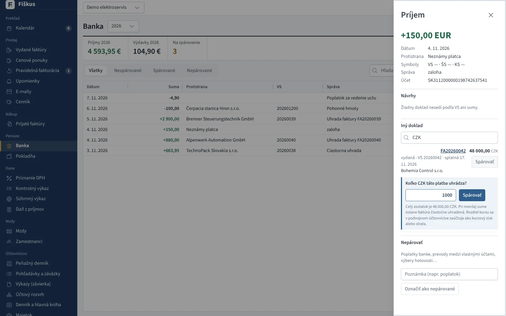
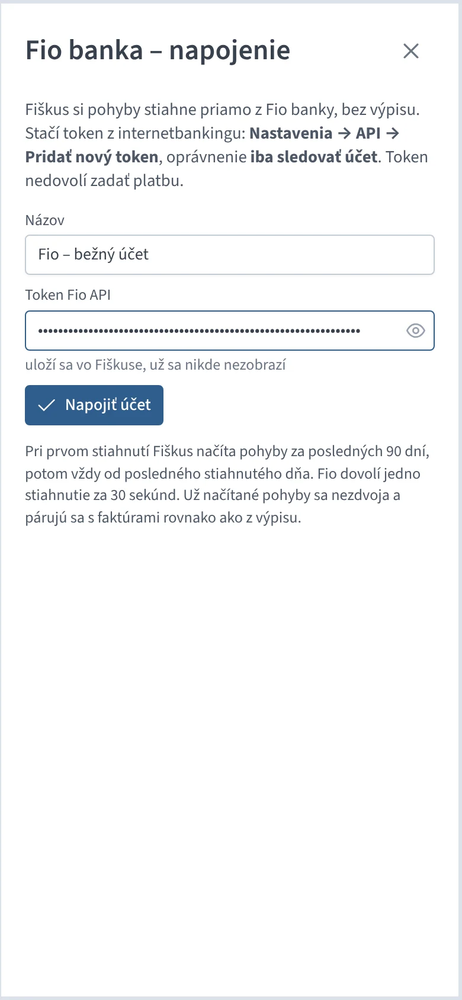
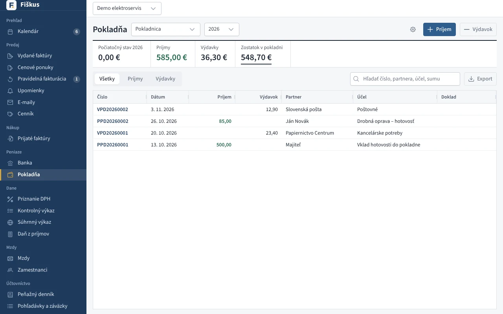
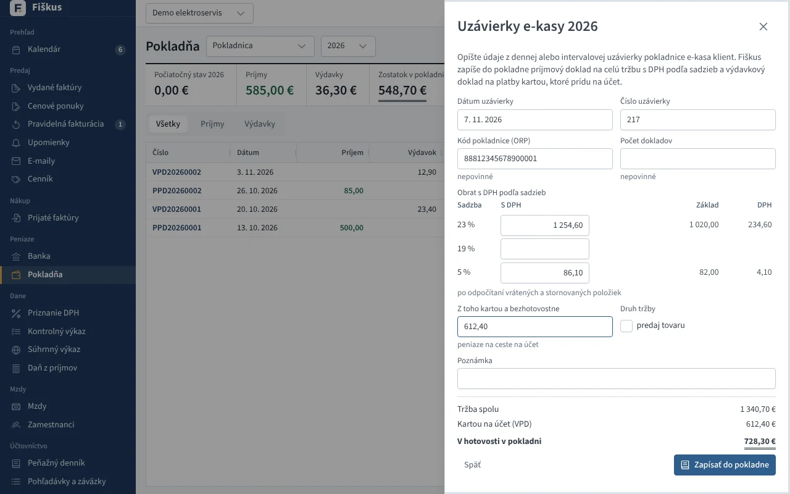

Peniaze¶
Banka¶
 Bankový výpis spárovaný s faktúrami podľa VS a sumy
Bankový výpis spárovaný s faktúrami podľa VS a sumy
| Formát výpisu | Poznámka |
|---|---|
| camt.053 (XML) | štandard slovenských bánk |
| GPC | starší formát (ABO) |
| CSV, Excel | stĺpce podľa hlavičky |
Po načítaní Fiškus spáruje platby s faktúrami podľa variabilného symbolu a sumy. Čo si nie je istý, ponúkne ako návrh; zvyšok spárujete ručne alebo necháte ako nepárovaný pohyb (poplatky, vklady), ktorý sa v peňažnom denníku zapíše ručne. Čiastočné úhrady sa sčítajú.
Faktúra v cudzej mene z eurového účtu. Pri ručnom párovaní eurovej platby sa v zozname „Iný doklad“ ponúknu aj faktúry v cudzej mene (hľadať sa dá aj podľa meny, napr. CZK). Fiškus sa opýta, koľko v mene faktúry platba uhrádza — predvolený je celý zostatok, pri menšej sume ostane faktúra čiastočne uhradená a čaká na ďalšiu platbu. V podvojnom účtovníctve sa pri každej platbe odpíše z účtu 311 pomerná časť sumy faktúry v eurách (posledná platba zvyšok) a rozdiel je kurzový zisk (663) alebo strata (563).


Fio banka priamo, bez výpisu¶
Fio banka dovolí čítať pohyby na účte cez svoje API. V Banke kliknite na Napojiť Fio a vložte token z internetbankingu Fio (Nastavenia → API → Pridať nový token, oprávnenie iba sledovať účet). Takýto token nedovolí zadať platbu. Potom stačí tlačidlo Stiahnuť z Fio: nové pohyby sa načítajú a spárujú s faktúrami rovnako ako z výpisu.
- Pri prvom stiahnutí sa načítajú pohyby za posledných 90 dní, potom vždy od posledného stiahnutého dňa. Už načítané pohyby sa nezdvoja.
- Fio dovolí jedno stiahnutie za 30 sekúnd; Fiškus skoršie volanie ani nepošle.
- Token sa po uložení už nikde nezobrazí (ani v audite či chybových hláseniach). Zmeniť ho môžete úpravou napojenia, zrušiť napojenie tlačidlom koša; stiahnuté pohyby zostanú.
- Viac účtov vo Fio (napr. eurový a dolárový) = viac tokenov, každý ako samostatné napojenie.
- Vo verzii v prehliadači napojenie nie je, banka nedovolí volanie z webovej stránky. Použite výpis.


Ostatné slovenské banky sprístupňujú pohyby iba licencovaným poskytovateľom (PSD2), preto sa u nich načítava výpis.
Prečo párovanie, a nie odškrtnutie „uhradené“
Úhrada je udalosť s dátumom a sumou. Z nej sa počíta peňažný denník, kurzový rozdiel aj stav pohľadávok k ľubovoľnému dňu. Faktúra s odškrtnutým políčkom by nevedela povedať, kedy a koľko prišlo.
Pokladňa¶
Príjmové a výdavkové pokladničné doklady (PPD, VPD) s tlačou a sumou slovom. Fiškus nedovolí, aby zostatok pokladne klesol pod nulu. Pokladničný doklad môže uhradiť faktúru v hotovosti.


- DPH na pokladničných dokladoch — bloček ako zjednodušená faktúra (odpočet, KV B.3.1/B.3.2 podľa limitu 3 000 €), tržba z e-kasy (KV D.1).
- Viac pokladní — každá má vlastný zostatok a rad dokladov.
- Pokladňa v cudzej mene — kurz ECB ku dňu dokladu.
Uzávierky e-kasy¶
Tržby z pokladnice e-kasa klient netreba zapisovať po bločkoch. V Pokladni kliknite na Uzávierky e-kasy → Nová uzávierka a opíšte údaje z dennej alebo intervalovej uzávierky: dátum, číslo uzávierky, kód pokladnice (ORP), obrat s DPH v každej sadzbe (po odpočítaní vrátených a stornovaných položiek) a koľko z toho zákazníci zaplatili kartou. Základ a DPH v každej sadzbe aj hotovosť dopočíta Fiškus hneď pri písaní.
Zapísať do pokladne vytvorí dva doklady:
- PPD na celú tržbu s DPH podľa sadzieb. Daň ide do priznania DPH (r. 03 až 06) a do kontrolného výkazu v časti D.1. V peňažnom denníku je to príjem z predaja tovaru (d1) alebo služieb (d2) podľa políčka predaj tovaru, v podvojnom účtovníctve 211 / 604 alebo 602 a 343.
- VPD na platby kartou: tieto peniaze nie sú v pokladni, sú na ceste na účet. V peňažnom denníku sú priebežná položka (c), v podvojnom účtovníctve 261 / 211.
Keď banka platby z terminálu pripíše na účet, Fiškus ich v bankovom výpise spozná podľa textu (platby kartou, terminál, Global Payments, SumUp…) a zaúčtuje ich ako peniaze na ceste (221 / 261, v peňažnom denníku c), nie ako druhú tržbu. Ak banka pripíše sumu po odpočítaní poplatku, rozdiel rozpíšte v peňažnom denníku ako výdavok na služby.
Neplatiteľ DPH zadá iba celú tržbu, bez sadzieb. Tá istá uzávierka (rovnaké číslo a ORP) sa nedá zapísať dvakrát. Doklady uzávierky sa nedajú stornovať jednotlivo. Stornuje sa celá uzávierka a s ňou oba doklady, potom ju môžete zapísať znova.
